Tucker format
Written by Sebastian Kraemer, IGPM at RWTH Aachen University
The Tucker decomposition is named after Ledyard R. Tucker (1966).
The Tucker format is a further generalization of a matrix low rank decomposition. It is, like the CP format, symmetric regarding its modes.
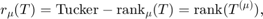
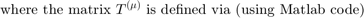
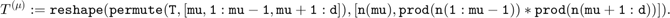
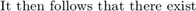
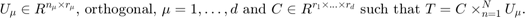
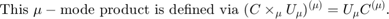
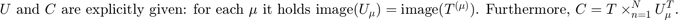
Contents
clear all % this clears all variables of their values
Matlab: size
While this has previously not been an issue, one should note that the size function may not capture mode sizes equal to 1. This is a slightly weird behaviour of Matlab. We will hence have to use the dimension d as input parameter.
size(rand(1,1,2,1)) size(rand(2,1,1,1)) size(rand(2,1,1))
ans =
1 1 2
ans =
2 1
ans =
2 1
EXERCISE 1: mu_mode_prod
Complete the following function mu_mode_prod. As input, it receives a d-dimensional tensor T and a matrix A, as well as an index mu. The output should be the tensor
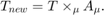
T1 = zeros(2,3,2); d = 3; T1(:) = 1:2*3*2;
A1 = zeros(3,2); A1(:) = 3*2:-1:1 A3 = zeros(4,2); A3(:) = 1:4*2
A1 =
6 3
5 2
4 1
A3 =
1 5
2 6
3 7
4 8
T1_new1 = mu_mode_prod(T1,d,A1,1) if ~isequal(T1_new1,'ANSWER 1 MISSING') sizeT1_new1 = size(T1_new1) T1_orig1 = mu_mode_prod(T1_new1,d,pinv(A1),1) % this should be the original tensor T1_new3 = mu_mode_prod(T1,d,A3,3) sizeT1_new3 = size(T1_new3) T1_orig3 = mu_mode_prod(T1_new3,d,pinv(A3),3) % this should be the original tensor end
T1_new1 = ANSWER 1 MISSING
Associativity
The mu-mode product is associative (this is quite easy to verify in general):
B1 = rand(2,2); B2 = rand(2,2); mu_mode_prod(mu_mode_prod(T1,d,B1,1),d,B2,1) mu_mode_prod(T1,d,B2*B1,1)
ans = ANSWER 1 MISSING ans = ANSWER 1 MISSING
EXERCISE 2: commutativity
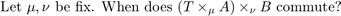
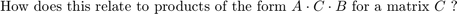
SOLUTION 2
'ANSWER 2 MISSING';
Constructing the full tensor
With the mu-mode product, it is easy to construct the full tensor. You can use the function Tucker_to_full_tensor to do this:
function C = Tucker_to_full_tensor(d,C,U)
for mu = 1:d C = mu_mode_prod(C,d,U{mu},mu); end
end
C = rand(2,2,1);
[U1,~] = qr(rand(3,2),0);
size(U1)
U1'*U1
[U2,~] = qr(rand(4,2),0);
[U3,~] = qr(rand(3,1),0);
T2 = Tucker_to_full_tensor(d,C,{U1,U2,U3});
if ~isequal(T2,'ANSWER 1 MISSING')
T2(1,1,1)
end
ans =
3 2
ans =
1.0000 0.0000
0.0000 1.0000
EXERCISE 3: entrywise evaluation
How can one, without unnecessary computations, evaluate one single entry of a tensor given in the Tucker format? Use the upper tensor T2 to verify your answer.
I = [2,3,1]; if ~isequal(T2,'ANSWER 1 MISSING') T2(2,3,1) end
SOLUTION:
'ANSWER 3 MISSING';
EXERCISE 4: comparison to CP
As we have seen, the CP format has several weakspots from a practical point of view (it does however have certain interesting theoretical aspects to be fair). Recall its properties and compare these to the Tucker format. What might be a weakspot of the Tucker format?
Norm of a Tucker tensor
Many operations can be applied to tensors if they are given in low rank formats, such as Tucker, without ever constructing the full tensor (this is nearly the hole point of these formats). For example (why does this hold?):
if ~isequal(T2,'ANSWER 1 MISSING') norm(C(:)) norm(T2(:)) end
EXERCISE* 5: hadamard product
Complete the following function Tucker_hadamard_prod. The function itself is not allowed to construct any full tensor. As input it expects two Tucker representations (C,U) and (S,Q) of two tensors, respectively. The output (W,P) is the representation of the tensor H_I defined as the hadamard product of these two input tensors, i.e.
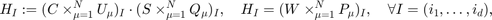
Both tensors have to be of the same size (yet not same rank). The output tensor also shares mode size and dimension. But what about its rank?
d = randi([3,5],1) n = randi([3,4],1,d)
d =
4
n =
3 4 3 4
rC = n - randi([1,2],1,d) % first random representation C = randn(rC); U = cell(1,d); for mu = 1:d [U{mu},~] = qr(rand(n(mu),rC(mu)),0); end
rC =
1 3 1 2
rS = n - randi([1,2],1,d) % second random representation S = randn(rS); Q = cell(1,d); for mu = 1:d [Q{mu},~] = qr(rand(n(mu),rS(mu)),0); end
rS =
1 3 1 3
T2 = Tucker_to_full_tensor(d,C,U); % first full tensor T3 = Tucker_to_full_tensor(d,S,Q); % second full tensor H = T2.*T3; % this performs the hadamard product
[W,Q] = Tucker_hadamard_prod(d,C,U,S,Q); % now first without full tensors if ~isequal('ANSWER 5 MISSING',W) H_I = H(2,2,1) H_WQ = Tucker_to_full_tensor(d,W,Q); H_WQ_I = H_WQ(2,2,1) % this should be the same else 'ANSWER 5 MISSING' end
ans = ANSWER 5 MISSING